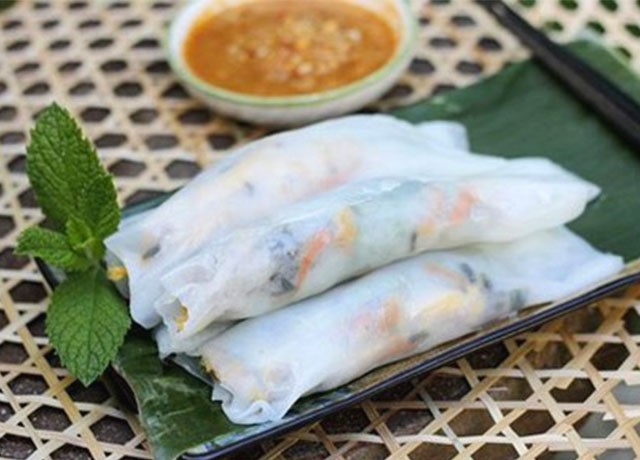

Gọi là cháo, nhưng cháo Vạc Giường lại là rất đặc biệt, thoáng nhìn qua, ai cũng nghĩ nó giống bánh canh hay canh bún cua bởi chúng đều được làm từ sợi bột gạo hay bột mì, nhưng hương vị lại khác hẳn nhau hoàn toàn đó.
Người Quảng thường gọi món ăn với tên dân dã là cháo cá, còn thực khách ghé qua lại đặt cho nó cái tên thân thương là cháo Vạc Giường do sợi cháo có hình dáng giống như vạc giường nơi đây.
Đến thăm Quảng Trị mà không nếm thử hương vị món cháo bột này là uổng lắm đó. Ghé quán và thưởng thức thôi. Một nhúm sợi bột dài mềm, vài lát cá chiên vàng ươm giòn rụm, thêm chút hành lá xanh xanh, chút ớt cay cay cùng với nước dùng ngọt thanh thơm mùi cá, hòa quyện cho ra hương vị cháo Vạc Giường vấn vương thực khách.
Bún hến Mai Xá, món ăn bình dị thân thuộc đã trở thành đặc sản Quảng Trị nhờ phong vị tinh tế. Làm nên nét đặc sắc của món bún hến ở Mai Xá đó chính là nguyên liệu chính “chắt chắt”. Nhìn qua ai cũng lầm tưởng chắt chắt và hến là một, nhưng khi đã thưởng thức bạn sẽ nhận ra ngay sự khác biệt. Thịt chắt chắt thơm mà đậm màu hơn hến, lại giàu chất dinh dưỡng.
Những ai đã nếm thử chắc chắn do dân Mai Xá chế biến sẽ không thể nào quên được hương vị tuyệt vời của món ăn này. Hành phi vàng ruộm rồi cho chắc chắn vào xào tới, thêm nước vào, bỏ thêm chút gừng chút ớt cay cay thơm nồng ăn tới đâu ấm lòng người xa quê tới đó. Bởi vậy, món bún hến này cũng được người dân nhớ tới như một phần tuổi thơ, một thời bình dị mà ấm áp.
Nhắc đến Phương Lang, người ta không chỉ nhớ về ngôi làng với khung cảnh đẹp yên bình mà còn nhớ về món bánh ướt ngon nức tiếng “bánh ướt Phương Lang”.
Cũng được làm như các loại bánh ướt khác, bánh được làm từ gạo là chính. Nhưng làm nên sự khác biệt cho món bánh nơi đây chính là kỹ thuật tráng bánh. Bán được tráng cách thủy trên một lớp vải có độ dày vừa phải, đến khi chín là có thể vớt ra xếp chồng lên nhau. Điều quan trọng là thợ tráng bánh phải khéo tay biết lúc nào là bánh đủ độ ngon, bánh ngon không nên quá dày hay mỏng.
Khi thưởng thức, bạn nhớ tách từng lớp bánh ra và cuộn với thịt heo ba chỉ chắc mềm và chút rau sống tươi non. Ăn kèm với nó là nước chấm. Nước chấm chua chua, ngọt ngọt, cay cay sẽ đánh thức vị giác bạn đến từng “căng-ti-mét”. Hãy cũng VNTRIP.VN đi thưởng thức thôi.
Gọi là “Rau Liệt Gio An” là do rau được trồng tại xã Gio An, huyện Gio Linh, tỉnh Quảng Trị. Đến Gio An nhớ phải thử món rau này nhé.
Loại rau này rất “quý” do được sinh trưởng và nuôi dưỡng từ nguồn nước giếng cổ hàng ngàn năm tuổi. Với loại rau này, người Gio An đã nghĩ ra rất nhiều cách chế biến ngon như: nấu canh với tôm tươi, luộc chấm nước mắm hay làm món trộn với thịt bò. Thường thì món rau xà lách xong trộn với thịt bò được ưa thích hơn. Thịt bò tẩm ướp đậm đà đem xào với hành phi tới lửa làm dậy mùi hương quyến rũ. Nước trộn chua thanh ngọt dịu. Trứng luộc chín tới đem thái khoanh. Khi ăn bạn chỉ cần xếp rau ra đĩa, thêm chút thịt bò, rải vài lát trứng rồi tưới nước trộn lên vậy là bạn đã có thể thưởng thức món ngon bổ dưỡng, lạ miệng này rồi.Thịt trâu lá trơng được xứng danh món ăn đặc sản Quảng Trị là nhờ sự kết hợp hài hòa giữa thịt trâu non và lá trơng.
Lá Trơng mọc khắp mảnh đất Quảng Trị, có thể không quá khi nói rằng món ăn này mang đậm hơi thở miền đất Quảng.
Thịt trâu lá trơng có thể chế biến thành nhiều nhóm, tuy nhiên thịt trâu lá trơng nướng và thịt trâu xào lá trơng là hai món được đón nhận sự yêu thích của thực khách nhất. Người muốn tận hưởng vị thịt nguyên sơ thơm phức nên thử món nướng, người thích vị đậm đà nên thử món xào. Mỗi món đặc sắc một kiểu, nếu có điều kiện bạn nên thử cả hai để cảm nhận hương vị Quảng Trị. Đặc biệt, trời lành lạnh mà được thưởng thức đĩa trâu lá trơng nóng hổi thì còn gì bằng.
Mít Thấu món ngon chỉ có ở Quảng Trị. Món ăn được chế biến từ rất nhiều nguyên liệu tươi ngon như: mít non, đậu hũ, đậu phụng, miếng dong, rau sống, da heo,…